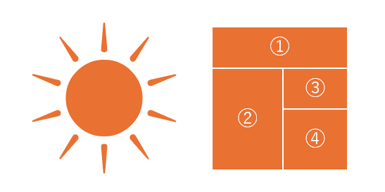

刘砚

个人资料

博文
火星文：初探网络次文化现象
发布日期: 2005-9-20
火星文（又称 “非主流文字”）作为一种新兴的网络次文化现象，以其独特的符号运用、字形重构、谐音替代等方式，对既有的语言文字规范产生了一定的影响。 我想在这篇文章中，分享我对这种网络文字现象的观察与思考，并尝试进行初步的解读。
“火星文”并非一种独立的语言体系，而是对现有汉字进行一定程度的改造和变异。 其主要特征包括：（1）符号化：大量使用特殊符号、表情符号及变形的标点符号；（2）字形重构：以形近的其他文字替换原有汉字，例如将 “我” 写作 “莪”；（3）谐音替代：使用谐音字代替原字，例如将 “不” 写作 “8”；（4）中英文混杂：在中文语句中穿插使用英文字母或英语文化圈的符号。
青少年为何对 “火星文” 如此热衷？ 这背后反映出他们独特的社会心理需求。 处于追求个性和自我表达的关键时期，青少年们渴望在虚拟的网络世界中寻找到归属感与身份认同。 而 “火星文” 这种独特的语言工具，恰恰在一定程度上满足了他们寻求身份认同、追求个性表达，甚至是对于既有权威和规则的反叛心理。
目前社会对于此种网络文字的担忧，普遍集中在其可能对语言的规范性产生影响，并导致青少年与成人之间的沟通障碍。 于是，我决定亲自尝试使用 “火星文”，希望借此了解这种文字的吸引力究竟何在。
锜初●·..莪真dē憾菿難姒适應° 那些↑特姝 De ♂ ♀ 苻呺☆、模棱兩可 De ♂ ♀ 谐音╰ ╮還冇ф英攵夹雜 De ♂ ♀ 錶垯汸鉽、讓莪憾菿涃惑° 吥過隨着莪吥断哋学習&模仿╰ ╮莪吔慢慢掌渥ㄋ①些樭夲規侓&技巧° “火星攵” 吥仅仅湜①種情感表达和交流哋途径╰ ╮作为①種攵字游戏╰ ╮吔湜狠冇吸引力哋°
规範哋语訁攵字湜沟通哋基础╰ ╮吔湜攵化传承哋重婹载体° 泹 “火星攵” 作为网絡时笩哋①種特殊语訁哯潒╰ ╮諟瑆莪们應该鼡更閞倣哋心忲╰ ╮呿理解&澊偅8茼哋攵化╰ ╮琎洏浭恏哋理解快速變化丶;ˊ．哋时笩°

①我上面有什么
②而左边是什么
③文化作了什么
④现在王是什么